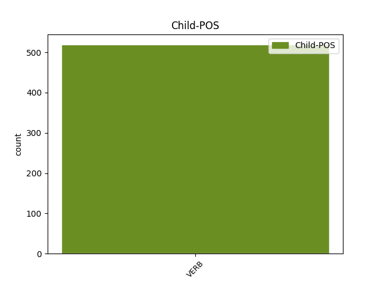

Distribution of features within this leaf

Agreement Rules sorted by frequency.
- When the dependent token is the parataxis(parataxis) of the head token, and the dependent token is VERB.
1 Նրան _ _ _ _ 0 _ _ _
2 կարող _ _ _ _ 0 _ _ _
3 են եմ AUX _ Aspect=Imp|Mood=Ind|Number=Plur|Person=3|Polarity=Pos|Tense=Pres|VerbForm=Fin 0 _ _ _
4 ազատազրկել _ _ _ _ 0 _ _ _
5 , _ _ _ _ 0 _ _ _
6 գնդակահարել _ _ _ _ 0 _ _ _
7 , _ _ _ _ 0 _ _ _
8 տեղափոխել _ _ _ _ 0 _ _ _
9 ԵԱՏՄ _ _ _ _ 0 _ _ _
10 անդամ _ _ _ _ 0 _ _ _
11 այլ _ _ _ _ 0 _ _ _
12 երկրի _ _ _ _ 0 _ _ _
13 բանտ _ _ _ _ 0 _ _ _
14 , _ _ _ _ 0 _ _ _
15 չէ _ _ _ _ 0 _ _ _
16 ՞ _ _ _ _ 0 _ _ _
17 որ _ _ _ _ 0 _ _ _
18 մենք _ _ _ _ 0 _ _ _
19 հիմա _ _ _ _ 0 _ _ _
20 մեկ _ _ _ _ 0 _ _ _
21 ընդհանուր _ _ _ _ 0 _ _ _
22 բանտ _ _ _ _ 0 _ _ _
23 ունենք ունեմ VERB _ Aspect=Imp|Mood=Ind|Number=Plur|Person=1|Polarity=Pos|Subcat=Tran|Tense=Pres|VerbForm=Fin|Voice=Act 3 parataxis _ LTranslit=ownem|SpaceAfter=No|Translit=ownenk’
24 : _ _ _ _ 0 _ _ _
1 Ապա _ _ _ _ 0 _ _ _
2 նա _ _ _ _ 0 _ _ _
3 վառ _ _ _ _ 0 _ _ _
4 ներկայացուցիչն _ _ _ _ 0 _ _ _
5 է _ _ _ _ 0 _ _ _
6 բիթնիկների _ _ _ _ 0 _ _ _
7 մշակույթի մշակույթ NOUN _ Animacy=Nhum|Case=Dat|Definite=Ind|Number=Sing 0 _ _ _
8 , _ _ _ _ 0 _ _ _
9 որը _ _ _ _ 0 _ _ _
10 ցնցեց ցնցել VERB _ Aspect=Perf|Mood=Ind|Number=Sing|Person=3|Polarity=Pos|Subcat=Tran|Tense=Past|VerbForm=Fin|Voice=Act 7 mod@relcl _ LTranslit=c’nc’el|Translit=c’nc’ec’
11 սպառողական _ _ _ _ 0 _ _ _
12 հասարակությունը _ _ _ _ 0 _ _ _
13 , _ _ _ _ 0 _ _ _
14 որտեղ _ _ _ _ 0 _ _ _
15 պատերազմի _ _ _ _ 0 _ _ _
16 օրերին _ _ _ _ 0 _ _ _
17 իշխող _ _ _ _ 0 _ _ _
18 է _ _ _ _ 0 _ _ _
19 դառնում _ _ _ _ 0 _ _ _
20 ռազմա _ _ _ _ 0 _ _ _
21 - _ _ _ _ 0 _ _ _
22 հայրենասիրական _ _ _ _ 0 _ _ _
23 հիստերիան _ _ _ _ 0 _ _ _
24 , _ _ _ _ 0 _ _ _
25 իսկ _ _ _ _ 0 _ _ _
26 խաղաղ _ _ _ _ 0 _ _ _
27 ժամանակ _ _ _ _ 0 _ _ _
28 գորշությունը _ _ _ _ 0 _ _ _
29 ՝ _ _ _ _ 0 _ _ _
30 իր _ _ _ _ 0 _ _ _
31 50 _ _ _ _ 0 _ _ _
32 երանգներով _ _ _ _ 0 _ _ _
33 ։ _ _ _ _ 0 _ _ _
1 Կարելի _ _ _ _ 0 _ _ _
2 է _ _ _ _ 0 _ _ _
3 հեռու _ _ _ _ 0 _ _ _
4 չգնալ _ _ _ _ 0 _ _ _
5 ու _ _ _ _ 0 _ _ _
6 հիշել _ _ _ _ 0 _ _ _
7 « _ _ _ _ 0 _ _ _
8 Լարովի _ _ _ _ 0 _ _ _
9 Թռչնի _ _ _ _ 0 _ _ _
10 ժամանակագրությունը _ _ _ _ 0 _ _ _
11 » _ _ _ _ 0 _ _ _
12 վեպը _ _ _ _ 0 _ _ _
13 ( _ _ _ _ 0 _ _ _
14 1994 _ _ _ _ 0 _ _ _
15 ) _ _ _ _ 0 _ _ _
16 , _ _ _ _ 0 _ _ _
17 որի _ _ _ _ 0 _ _ _
18 վերնագիրն _ _ _ _ 0 _ _ _
19 իհարկե _ _ _ _ 0 _ _ _
20 ավելի _ _ _ _ 0 _ _ _
21 լավն _ _ _ _ 0 _ _ _
22 է _ _ _ _ 0 _ _ _
23 , _ _ _ _ 0 _ _ _
24 քան _ _ _ _ 0 _ _ _
25 « _ _ _ _ 0 _ _ _
26 Լսիր լսել VERB _ Aspect=Prosp|Mood=Imp|Number=Sing|Person=2|Subcat=Tran|VerbForm=Fin|Voice=Act 30 mod _ LTranslit=lsel|Translit=Lsir
27 քամու _ _ _ _ 0 _ _ _
28 երգը _ _ _ _ 0 _ _ _
29 » _ _ _ _ 0 _ _ _
30 տափակությունը տափակություն NOUN _ Animacy=Nhum|Case=Nom|Definite=Def|Number=Sing 0 _ _ _
31 ( _ _ _ _ 0 _ _ _
32 Հարուկիի _ _ _ _ 0 _ _ _
33 առաջին _ _ _ _ 0 _ _ _
34 վիպակը _ _ _ _ 0 _ _ _
35 , _ _ _ _ 0 _ _ _
36 որը _ _ _ _ 0 _ _ _
37 գրելու _ _ _ _ 0 _ _ _
38 և _ _ _ _ 0 _ _ _
39 առհասարակ _ _ _ _ 0 _ _ _
40 գրականությամբ _ _ _ _ 0 _ _ _
41 զբաղվելու _ _ _ _ 0 _ _ _
42 անհրաժեշտությունը _ _ _ _ 0 _ _ _
43 նա _ _ _ _ 0 _ _ _
44 հասկացել _ _ _ _ 0 _ _ _
45 է _ _ _ _ 0 _ _ _
46 բեյսբոլի _ _ _ _ 0 _ _ _
47 մի _ _ _ _ 0 _ _ _
48 խաղ _ _ _ _ 0 _ _ _
49 նայելուց _ _ _ _ 0 _ _ _
50 ) _ _ _ _ 0 _ _ _
51 , _ _ _ _ 0 _ _ _
52 բայց _ _ _ _ 0 _ _ _
53 ակնհայտ _ _ _ _ 0 _ _ _
54 նմանօրինակումն _ _ _ _ 0 _ _ _
55 է _ _ _ _ 0 _ _ _
56 Էնթոնի _ _ _ _ 0 _ _ _
57 Բյըրջեսի _ _ _ _ 0 _ _ _
58 « _ _ _ _ 0 _ _ _
59 Լարովի _ _ _ _ 0 _ _ _
60 նարինջը _ _ _ _ 0 _ _ _
61 » _ _ _ _ 0 _ _ _
62 վեպի _ _ _ _ 0 _ _ _
63 ( _ _ _ _ 0 _ _ _
64 1962 _ _ _ _ 0 _ _ _
65 ) _ _ _ _ 0 _ _ _
66 , _ _ _ _ 0 _ _ _
67 որի _ _ _ _ 0 _ _ _
68 հիման _ _ _ _ 0 _ _ _
69 վրա _ _ _ _ 0 _ _ _
70 1971-ին _ _ _ _ 0 _ _ _
71 Սթենլի _ _ _ _ 0 _ _ _
72 Կուբրիկը _ _ _ _ 0 _ _ _
73 նկարել _ _ _ _ 0 _ _ _
74 է _ _ _ _ 0 _ _ _
75 համանուն _ _ _ _ 0 _ _ _
76 գլուխգործոցը _ _ _ _ 0 _ _ _
77 ։ _ _ _ _ 0 _ _ _
1 Սերժ _ _ _ _ 0 _ _ _
2 Սարգսյանի _ _ _ _ 0 _ _ _
3 պայմանական _ _ _ _ 0 _ _ _
4 « _ _ _ _ 0 _ _ _
5 տեխնոկրատների _ _ _ _ 0 _ _ _
6 » _ _ _ _ 0 _ _ _
7 թիմը _ _ _ _ 0 _ _ _
8 ՀՀԿ-ում _ _ _ _ 0 _ _ _
9 պետք _ _ _ _ 0 _ _ _
10 է եմ AUX _ Aspect=Imp|Mood=Ind|Number=Sing|Person=3|Polarity=Pos|Tense=Pres|VerbForm=Fin 0 _ _ _
11 որպես _ _ _ _ 0 _ _ _
12 դաշնակից _ _ _ _ 0 _ _ _
13 ընտրի ընտրել VERB _ Aspect=Prosp|Mood=Sub|Number=Sing|Person=3|Polarity=Pos|Subcat=Tran|Tense=Pres|VerbForm=Fin|Voice=Act 10 comp:aux _ LTranslit=ëntrel|Translit=ëntri
14 կամ _ _ _ _ 0 _ _ _
15 Կարապետյանի _ _ _ _ 0 _ _ _
16 նոր _ _ _ _ 0 _ _ _
17 թիմին _ _ _ _ 0 _ _ _
18 , _ _ _ _ 0 _ _ _
19 կամ _ _ _ _ 0 _ _ _
20 էլ _ _ _ _ 0 _ _ _
21 հին _ _ _ _ 0 _ _ _
22 ընկեր _ _ _ _ 0 _ _ _
23 օլիգարխներին _ _ _ _ 0 _ _ _
24 : _ _ _ _ 0 _ _ _
1 Միայն _ _ _ _ 0 _ _ _
2 տեսնում _ _ _ _ 0 _ _ _
3 էին _ _ _ _ 0 _ _ _
4 , _ _ _ _ 0 _ _ _
5 որ _ _ _ _ 0 _ _ _
6 երբեմն _ _ _ _ 0 _ _ _
7 առավոտյան _ _ _ _ 0 _ _ _
8 , _ _ _ _ 0 _ _ _
9 երբեմն _ _ _ _ 0 _ _ _
10 երեկոյան _ _ _ _ 0 _ _ _
11 Գյուղ _ _ _ _ 0 _ _ _
12 է _ _ _ _ 0 _ _ _
13 իջնում _ _ _ _ 0 _ _ _
14 , _ _ _ _ 0 _ _ _
15 նայում _ _ _ _ 0 _ _ _
16 ՝ _ _ _ _ 0 _ _ _
17 ինչ _ _ _ _ 0 _ _ _
18 կա կամ VERB _ Aspect=Imp|Mood=Ind|Number=Sing|Person=3|Polarity=Pos|Subcat=Intr|Tense=Pres|VerbForm=Fin|Voice=Mid 0 _ _ _
19 - _ _ _ _ 0 _ _ _
20 չկա կամ VERB _ Aspect=Imp|Mood=Ind|Number=Sing|Person=3|Polarity=Neg|Subcat=Intr|Tense=Pres|VerbForm=Fin|Voice=Mid 18 compound@svc _ LTranslit=kam|Translit=čka
21 ու _ _ _ _ 0 _ _ _
22 դարձյալ _ _ _ _ 0 _ _ _
23 բարձրանում _ _ _ _ 0 _ _ _
24 Հաչա _ _ _ _ 0 _ _ _
25 Քարի _ _ _ _ 0 _ _ _
26 տակ _ _ _ _ 0 _ _ _
27 ՝ _ _ _ _ 0 _ _ _
28 Մկաց _ _ _ _ 0 _ _ _
29 Աղբրի _ _ _ _ 0 _ _ _
30 մոտ _ _ _ _ 0 _ _ _
31 գտնվող _ _ _ _ 0 _ _ _
32 իր _ _ _ _ 0 _ _ _
33 ժայռափորը _ _ _ _ 0 _ _ _
34 ։ _ _ _ _ 0 _ _ _
1 Մենք _ _ _ _ 0 _ _ _
2 մասնակից _ _ _ _ 0 _ _ _
3 ենք _ _ _ _ 0 _ _ _
4 եղել _ _ _ _ 0 _ _ _
5 խորհրդային _ _ _ _ 0 _ _ _
6 կայսրության _ _ _ _ 0 _ _ _
7 անկմանը _ _ _ _ 0 _ _ _
8 , _ _ _ _ 0 _ _ _
9 առանց _ _ _ _ 0 _ _ _
10 գիտակցելու _ _ _ _ 0 _ _ _
11 պատմական _ _ _ _ 0 _ _ _
12 պահին _ _ _ _ 0 _ _ _
13 մեր _ _ _ _ 0 _ _ _
14 մասնակցությունը _ _ _ _ 0 _ _ _
15 , _ _ _ _ 0 _ _ _
16 բայց _ _ _ _ 0 _ _ _
17 հաճախ _ _ _ _ 0 _ _ _
18 վտանգելով _ _ _ _ 0 _ _ _
19 մեզ _ _ _ _ 0 _ _ _
20 , _ _ _ _ 0 _ _ _
21 առանց _ _ _ _ 0 _ _ _
22 նշանակություն _ _ _ _ 0 _ _ _
23 տալու տալ VERB _ Case=Dat|Definite=Ind|Number=Coll|Polarity=Pos|Subcat=Tran|VerbForm=Gdv|Voice=Act 0 _ _ _
24 վտանգի _ _ _ _ 0 _ _ _
25 իրական _ _ _ _ 0 _ _ _
26 լինելուն լինել VERB _ Case=Dat|Definite=Def|Number=Coll|Polarity=Pos|Subcat=Intr|VerbForm=Gdv|Voice=Mid 23 comp:pred _ LTranslit=linel|SpaceAfter=No|Translit=linelown
27 , _ _ _ _ 0 _ _ _
28 որովհետև _ _ _ _ 0 _ _ _
29 մենք _ _ _ _ 0 _ _ _
30 տասնյոթից _ _ _ _ 0 _ _ _
31 քսաներեք _ _ _ _ 0 _ _ _
32 տարեկան _ _ _ _ 0 _ _ _
33 ուսանողներ _ _ _ _ 0 _ _ _
34 էինք _ _ _ _ 0 _ _ _
35 ու _ _ _ _ 0 _ _ _
36 ազատությամբ _ _ _ _ 0 _ _ _
37 ոգևորված _ _ _ _ 0 _ _ _
38 : _ _ _ _ 0 _ _ _
1 Փողը _ _ _ _ 0 _ _ _
2 հավաքում _ _ _ _ 0 _ _ _
3 , _ _ _ _ 0 _ _ _
4 հավաքում _ _ _ _ 0 _ _ _
5 էի _ _ _ _ 0 _ _ _
6 , _ _ _ _ 0 _ _ _
7 հավաքվում _ _ _ _ 0 _ _ _
8 էր _ _ _ _ 0 _ _ _
9 ՝ _ _ _ _ 0 _ _ _
10 մտածում _ _ _ _ 0 _ _ _
11 էի _ _ _ _ 0 _ _ _
12 ՝ _ _ _ _ 0 _ _ _
13 ավել _ _ _ _ 0 _ _ _
14 գումար _ _ _ _ 0 _ _ _
15 է _ _ _ _ 0 _ _ _
16 , _ _ _ _ 0 _ _ _
17 հիվանդ _ _ _ _ 0 _ _ _
18 երեխա _ _ _ _ 0 _ _ _
19 է _ _ _ _ 0 _ _ _
20 , _ _ _ _ 0 _ _ _
21 չգիտեմ գիտել VERB _ Aspect=Imp|Mood=Ind|Number=Sing|Person=1|Polarity=Neg|Subcat=Tran|Tense=Pres|VerbForm=Fin|Voice=Act 23 discourse _ LTranslit=gitel|Translit=čgitem
22 ինչ _ _ _ _ 0 _ _ _
23 է եմ AUX _ Aspect=Imp|Mood=Ind|Number=Sing|Person=3|Polarity=Pos|Tense=Pres|VerbForm=Fin 0 _ _ _
24 , _ _ _ _ 0 _ _ _
25 դրա _ _ _ _ 0 _ _ _
26 համար _ _ _ _ 0 _ _ _
27 է _ _ _ _ 0 _ _ _
28 ... _ _ _ _ 0 _ _ _
29 : _ _ _ _ 0 _ _ _
1 - _ _ _ _ 0 _ _ _
2 Կարծում _ _ _ _ 0 _ _ _
3 եմ _ _ _ _ 0 _ _ _
4 սա _ _ _ _ 0 _ _ _
5 ոչ _ _ _ _ 0 _ _ _
6 այնքան _ _ _ _ 0 _ _ _
7 հանդգնության _ _ _ _ 0 _ _ _
8 , _ _ _ _ 0 _ _ _
9 նորի _ _ _ _ 0 _ _ _
10 փայլատակումի _ _ _ _ 0 _ _ _
11 , _ _ _ _ 0 _ _ _
12 որքան _ _ _ _ 0 _ _ _
13 հոգնածության հոգնածություն NOUN _ Animacy=Nhum|Case=Dat|Definite=Ind|Number=Coll 0 _ _ _
14 ու _ _ _ _ 0 _ _ _
15 ձանձրույթի _ _ _ _ 0 _ _ _
16 ՝ _ _ _ _ 0 _ _ _
17 այլևս _ _ _ _ 0 _ _ _
18 չհանդուրժելու հանդուրժել VERB _ Case=Dat|Definite=Ind|Number=Coll|Polarity=Neg|Subcat=Intr|VerbForm=Gdv|Voice=Mid 13 appos _ LTranslit=handowržel|Translit=čhandowrželow
19 քայլ _ _ _ _ 0 _ _ _
20 էր _ _ _ _ 0 _ _ _
21 ։ _ _ _ _ 0 _ _ _
1 Այսօր _ _ _ _ 0 _ _ _
2 գլուխ _ _ _ _ 0 _ _ _
3 խոնարհելով _ _ _ _ 0 _ _ _
4 սուրբ _ _ _ _ 0 _ _ _
5 նահատակների _ _ _ _ 0 _ _ _
6 հիշատակի _ _ _ _ 0 _ _ _
7 առջև _ _ _ _ 0 _ _ _
8 ՝ _ _ _ _ 0 _ _ _
9 միևնույն _ _ _ _ 0 _ _ _
10 ժամանակ _ _ _ _ 0 _ _ _
11 մենք _ _ _ _ 0 _ _ _
12 վկայում _ _ _ _ 0 _ _ _
13 ենք _ _ _ _ 0 _ _ _
14 վերապրելու վերապրել VERB _ Case=Dat|Definite=Ind|Number=Coll|Polarity=Pos|Subcat=Intr|VerbForm=Gdv|Voice=Mid 20 mod@poss _ LTranslit=veraprel|Translit=veraprelow
15 և _ _ _ _ 0 _ _ _
16 մեր _ _ _ _ 0 _ _ _
17 Հայրենիքը _ _ _ _ 0 _ _ _
18 վերակերտելու _ _ _ _ 0 _ _ _
19 աննկուն _ _ _ _ 0 _ _ _
20 կամքը կամք NOUN _ Animacy=Nhum|Case=Nom|Definite=Def|Number=Coll 0 _ _ _
21 : _ _ _ _ 0 _ _ _
1 Վարչապետը _ _ _ _ 0 _ _ _
2 կարևորել _ _ _ _ 0 _ _ _
3 է _ _ _ _ 0 _ _ _
4 ներկայացված _ _ _ _ 0 _ _ _
5 ծրագրերի _ _ _ _ 0 _ _ _
6 իրականացումը _ _ _ _ 0 _ _ _
7 մեր _ _ _ _ 0 _ _ _
8 երկրում _ _ _ _ 0 _ _ _
9 և _ _ _ _ 0 _ _ _
10 հայտնել _ _ _ _ 0 _ _ _
11 կառավարության _ _ _ _ 0 _ _ _
12 պատրաստակամությունը պատրաստակամություն NOUN _ Animacy=Nhum|Case=Nom|Definite=Def|Number=Coll 0 _ _ _
13 ` _ _ _ _ 0 _ _ _
14 առկա _ _ _ _ 0 _ _ _
15 գործիքակազմերի _ _ _ _ 0 _ _ _
16 շրջանակում _ _ _ _ 0 _ _ _
17 օժանդակելու օժանդակել VERB _ Case=Dat|Definite=Ind|Number=Coll|Polarity=Pos|Subcat=Tran|VerbForm=Gdv|Voice=Act 12 mod@npmod _ LTranslit=òžandakel|Translit=òžandakelow
18 դրանց _ _ _ _ 0 _ _ _
19 կյանքի _ _ _ _ 0 _ _ _
20 կոչմանը _ _ _ _ 0 _ _ _
21 : _ _ _ _ 0 _ _ _
1 Մարդկանց _ _ _ _ 0 _ _ _
2 ճակատագրի _ _ _ _ 0 _ _ _
3 այդ _ _ _ _ 0 _ _ _
4 տնօրենները _ _ _ _ 0 _ _ _
5 ապրելու ապրել VERB _ Case=Dat|Definite=Ind|Number=Coll|Polarity=Pos|Subcat=Intr|VerbForm=Gdv|Voice=Mid 0 _ _ _
6 - _ _ _ _ 0 _ _ _
7 մեռնելու մեռնել VERB _ Case=Dat|Definite=Ind|Number=Coll|Polarity=Pos|Subcat=Intr|VerbForm=Gdv|Voice=Mid 5 compound _ LTranslit=meṙnel|Translit=meṙnelow
8 ընտրությունը _ _ _ _ 0 _ _ _
9 մի _ _ _ _ 0 _ _ _
10 րոպե _ _ _ _ 0 _ _ _
11 իրենց _ _ _ _ 0 _ _ _
12 ՝ _ _ _ _ 0 _ _ _
13 Շաքրոյին _ _ _ _ 0 _ _ _
14 ու _ _ _ _ 0 _ _ _
15 Իգնատին _ _ _ _ 0 _ _ _
16 են _ _ _ _ 0 _ _ _
17 թողել _ _ _ _ 0 _ _ _
18 . _ _ _ _ 0 _ _ _
19 իրենց _ _ _ _ 0 _ _ _
20 մեջ _ _ _ _ 0 _ _ _
21 թող _ _ _ _ 0 _ _ _
22 վճռեն _ _ _ _ 0 _ _ _
23 , _ _ _ _ 0 _ _ _
24 թե _ _ _ _ 0 _ _ _
25 ով _ _ _ _ 0 _ _ _
26 է _ _ _ _ 0 _ _ _
27 ճակատ _ _ _ _ 0 _ _ _
28 գնում _ _ _ _ 0 _ _ _
29 և _ _ _ _ 0 _ _ _
30 ով _ _ _ _ 0 _ _ _
31 է _ _ _ _ 0 _ _ _
32 ետ _ _ _ _ 0 _ _ _
33 գյուղ _ _ _ _ 0 _ _ _
34 դառնում _ _ _ _ 0 _ _ _
35 , _ _ _ _ 0 _ _ _
36 բայց _ _ _ _ 0 _ _ _
37 պապը _ _ _ _ 0 _ _ _
38 հանկարծ _ _ _ _ 0 _ _ _
39 գլխի _ _ _ _ 0 _ _ _
40 է _ _ _ _ 0 _ _ _
41 ընկել _ _ _ _ 0 _ _ _
42 , _ _ _ _ 0 _ _ _
43 որ _ _ _ _ 0 _ _ _
44 ռազմա _ _ _ _ 0 _ _ _
45 - _ _ _ _ 0 _ _ _
46 բանակային _ _ _ _ 0 _ _ _
47 կյանքի _ _ _ _ 0 _ _ _
48 շուքը _ _ _ _ 0 _ _ _
49 գուցե _ _ _ _ 0 _ _ _
50 հրապուրի _ _ _ _ 0 _ _ _
51 լավ _ _ _ _ 0 _ _ _
52 ձիու _ _ _ _ 0 _ _ _
53 , _ _ _ _ 0 _ _ _
54 երգի _ _ _ _ 0 _ _ _
55 , _ _ _ _ 0 _ _ _
56 լավ _ _ _ _ 0 _ _ _
57 հագուստի _ _ _ _ 0 _ _ _
58 , _ _ _ _ 0 _ _ _
59 քրոմե _ _ _ _ 0 _ _ _
60 սապոգների _ _ _ _ 0 _ _ _
61 ու _ _ _ _ 0 _ _ _
62 կարգադրությունների _ _ _ _ 0 _ _ _
63 Շաքրոյին _ _ _ _ 0 _ _ _
64 և _ _ _ _ 0 _ _ _
65 նույն _ _ _ _ 0 _ _ _
66 այդ _ _ _ _ 0 _ _ _
67 շուքը _ _ _ _ 0 _ _ _
68 վանի _ _ _ _ 0 _ _ _
69 ամաչկոտ _ _ _ _ 0 _ _ _
70 ու _ _ _ _ 0 _ _ _
71 մարդախույս _ _ _ _ 0 _ _ _
72 Իգնատին _ _ _ _ 0 _ _ _
73 , _ _ _ _ 0 _ _ _
74 և _ _ _ _ 0 _ _ _
75 պապը _ _ _ _ 0 _ _ _
76 ինքն _ _ _ _ 0 _ _ _
77 է _ _ _ _ 0 _ _ _
78 ընտրել _ _ _ _ 0 _ _ _
79 . _ _ _ _ 0 _ _ _
80 « _ _ _ _ 0 _ _ _
81 Իգնատին _ _ _ _ 0 _ _ _
82 տալիս _ _ _ _ 0 _ _ _
83 եմ _ _ _ _ 0 _ _ _
84 ... _ _ _ _ 0 _ _ _
85 Իգնատին _ _ _ _ 0 _ _ _
86 եմ _ _ _ _ 0 _ _ _
87 տալիս _ _ _ _ 0 _ _ _
88 , _ _ _ _ 0 _ _ _
89 այտա _ _ _ _ 0 _ _ _
90 , _ _ _ _ 0 _ _ _
91 Իգնատն _ _ _ _ 0 _ _ _
92 անլեզու _ _ _ _ 0 _ _ _
93 անճար _ _ _ _ 0 _ _ _
94 է _ _ _ _ 0 _ _ _
95 , _ _ _ _ 0 _ _ _
96 գյուղին _ _ _ _ 0 _ _ _
97 Իգնատը _ _ _ _ 0 _ _ _
98 չի _ _ _ _ 0 _ _ _
99 պետք _ _ _ _ 0 _ _ _
100 » _ _ _ _ 0 _ _ _
101 ։ _ _ _ _ 0 _ _ _
1 Ես _ _ _ _ 0 _ _ _
2 համալսարանին _ _ _ _ 0 _ _ _
3 մնաս մնալ VERB _ Aspect=Prosp|Mood=Sub|Number=Sing|Person=2|Polarity=Pos|Subcat=Intr|Tense=Pres|VerbForm=Fin|Voice=Mid 5 compound@lvc _ LTranslit=mnal|Translit=mnas
4 բարով _ _ _ _ 0 _ _ _
5 ասացի ասել VERB _ Aspect=Perf|Mood=Ind|Number=Sing|Person=1|Polarity=Pos|Subcat=Tran|Tense=Past|VerbForm=Fin|Voice=Act 0 _ _ _
6 ՝ _ _ _ _ 0 _ _ _
7 ինքս _ _ _ _ 0 _ _ _
8 ինձ _ _ _ _ 0 _ _ _
9 մխիթարելով _ _ _ _ 0 _ _ _
10 , _ _ _ _ 0 _ _ _
11 որ _ _ _ _ 0 _ _ _
12 շնական _ _ _ _ 0 _ _ _
13 Դիոգենեսը _ _ _ _ 0 _ _ _
14 ևս _ _ _ _ 0 _ _ _
15 համալսարան _ _ _ _ 0 _ _ _
16 չէր _ _ _ _ 0 _ _ _
17 ավարտել _ _ _ _ 0 _ _ _
18 ։ _ _ _ _ 0 _ _ _
Disagree Examples:
1 Եդեմն _ _ _ _ 0 _ _ _
2 այլ _ _ _ _ 0 _ _ _
3 մոլորակ _ _ _ _ 0 _ _ _
4 էր _ _ _ _ 0 _ _ _
5 , _ _ _ _ 0 _ _ _
6 աքսորավայրը _ _ _ _ 0 _ _ _
7 ՝ _ _ _ _ 0 _ _ _
8 այլ _ _ _ _ 0 _ _ _
9 , _ _ _ _ 0 _ _ _
10 այսինքն _ _ _ _ 0 _ _ _
11 ՝ _ _ _ _ 0 _ _ _
12 այս _ _ _ _ 0 _ _ _
13 , _ _ _ _ 0 _ _ _
14 ուր _ _ _ _ 0 _ _ _
15 այժմ _ _ _ _ 0 _ _ _
16 էլ _ _ _ _ 0 _ _ _
17 բնակվում _ _ _ _ 0 _ _ _
18 ենք _ _ _ _ 0 _ _ _
19 , _ _ _ _ 0 _ _ _
20 բայց _ _ _ _ 0 _ _ _
21 միշտ _ _ _ _ 0 _ _ _
22 նայում _ _ _ _ 0 _ _ _
23 ենք եմ AUX _ Aspect=Imp|Mood=Ind|Number=Plur|Person=3|Polarity=Pos|Tense=Pres|VerbForm=Fin 0 _ _ _
24 երկինք _ _ _ _ 0 _ _ _
25 ՝ _ _ _ _ 0 _ _ _
26 բնազդում _ _ _ _ 0 _ _ _
27 դրոշմված _ _ _ _ 0 _ _ _
28 հիշողությամբ _ _ _ _ 0 _ _ _
29 Եդեմը _ _ _ _ 0 _ _ _
30 որոնելով որոնել VERB _ Case=Ins|Definite=Ind|Number=Coll|Polarity=Pos|Subcat=Tran|VerbForm=Gdv|Voice=Act 23 mod _ LTranslit=oronel|SpaceAfter=No|Translit=oronelov
31 ։ _ _ _ _ 0 _ _ _
1 Մի _ _ _ _ 0 _ _ _
2 խոսքով _ _ _ _ 0 _ _ _
3 ՝ _ _ _ _ 0 _ _ _
4 մենք _ _ _ _ 0 _ _ _
5 դրա _ _ _ _ 0 _ _ _
6 հետ _ _ _ _ 0 _ _ _
7 էլ _ _ _ _ 0 _ _ _
8 գործ _ _ _ _ 0 _ _ _
9 չունենք ունեմ VERB _ Aspect=Imp|Mood=Ind|Number=Plur|Person=1|Polarity=Neg|Subcat=Tran|Tense=Pres|VerbForm=Fin|Voice=Act 0 _ _ _
10 , _ _ _ _ 0 _ _ _
11 մերը _ _ _ _ 0 _ _ _
12 չէ _ _ _ _ 0 _ _ _
13 այլևս _ _ _ _ 0 _ _ _
14 , _ _ _ _ 0 _ _ _
15 մերը _ _ _ _ 0 _ _ _
16 սա _ _ _ _ 0 _ _ _
17 է _ _ _ _ 0 _ _ _
18 ՝ _ _ _ _ 0 _ _ _
19 դժոխքը _ _ _ _ 0 _ _ _
20 , _ _ _ _ 0 _ _ _
21 որը _ _ _ _ 0 _ _ _
22 , _ _ _ _ 0 _ _ _
23 սակայն _ _ _ _ 0 _ _ _
24 , _ _ _ _ 0 _ _ _
25 հասցրել _ _ _ _ 0 _ _ _
26 ենք _ _ _ _ 0 _ _ _
27 սիրել _ _ _ _ 0 _ _ _
28 . _ _ _ _ 0 _ _ _
29 դեհ _ _ _ _ 0 _ _ _
30 , _ _ _ _ 0 _ _ _
31 շանը _ _ _ _ 0 _ _ _
32 որտեղ _ _ _ _ 0 _ _ _
33 էլ _ _ _ _ 0 _ _ _
34 կապես կապել VERB _ Aspect=Prosp|Mood=Sub|Number=Sing|Person=2|Polarity=Pos|Subcat=Tran|Tense=Pres|VerbForm=Fin|Voice=Act 9 parataxis _ LTranslit=kapel|SpaceAfter=No|Translit=kapes
35 , _ _ _ _ 0 _ _ _
36 կապվում _ _ _ _ 0 _ _ _
37 - _ _ _ _ 0 _ _ _
38 ընտելանում _ _ _ _ 0 _ _ _
39 - _ _ _ _ 0 _ _ _
40 սիրում _ _ _ _ 0 _ _ _
41 է _ _ _ _ 0 _ _ _
42 ։ _ _ _ _ 0 _ _ _
1 Իրականում _ _ _ _ 0 _ _ _
2 հեչ _ _ _ _ 0 _ _ _
3 սիրելու սիրել VERB _ Case=Dat|Definite=Ind|Number=Coll|Polarity=Pos|Subcat=Tran|VerbForm=Gdv|Voice=Act 4 mod@poss _ LTranslit=sirel|Translit=sirelow
4 բան բան NOUN _ Animacy=Nhum|Case=Nom|Definite=Ind|Number=Sing 0 _ _ _
5 չի _ _ _ _ 0 _ _ _
6 . _ _ _ _ 0 _ _ _
7 հա _ _ _ _ 0 _ _ _
8 , _ _ _ _ 0 _ _ _
9 էլի _ _ _ _ 0 _ _ _
10 որ _ _ _ _ 0 _ _ _
11 ՝ _ _ _ _ 0 _ _ _
12 կապույտ _ _ _ _ 0 _ _ _
13 երկինք _ _ _ _ 0 _ _ _
14 , _ _ _ _ 0 _ _ _
15 ծովեր _ _ _ _ 0 _ _ _
16 , _ _ _ _ 0 _ _ _
17 անտառներ _ _ _ _ 0 _ _ _
18 , _ _ _ _ 0 _ _ _
19 դաշտեր _ _ _ _ 0 _ _ _
20 : _ _ _ _ 0 _ _ _
1 Ի _ _ _ _ 0 _ _ _
2 սկզբանե _ _ _ _ 0 _ _ _
3 մեր _ _ _ _ 0 _ _ _
4 ուշքումիտքն _ _ _ _ 0 _ _ _
5 ինքնապահպանումն _ _ _ _ 0 _ _ _
6 էր եմ AUX _ Aspect=Imp|Mood=Ind|Number=Sing|Person=3|Polarity=Pos|Tense=Imp|VerbForm=Fin 0 _ _ _
7 , _ _ _ _ 0 _ _ _
8 ստամոքսը _ _ _ _ 0 _ _ _
9 լցնելը _ _ _ _ 0 _ _ _
10 , _ _ _ _ 0 _ _ _
11 էդ _ _ _ _ 0 _ _ _
12 հետո _ _ _ _ 0 _ _ _
13 , _ _ _ _ 0 _ _ _
14 երբ _ _ _ _ 0 _ _ _
15 անտառից _ _ _ _ 0 _ _ _
16 փախանք _ _ _ _ 0 _ _ _
17 , _ _ _ _ 0 _ _ _
18 քաղաքակրթություն _ _ _ _ 0 _ _ _
19 ստեղծեցինք ստեղծել VERB _ Aspect=Perf|Mood=Ind|Number=Plur|Person=1|Polarity=Pos|Subcat=Tran|Tense=Past|VerbForm=Fin|Voice=Act 6 parataxis _ LTranslit=steġçel|SpaceAfter=No|Translit=steġçec’ink’
20 , _ _ _ _ 0 _ _ _
21 ազատ _ _ _ _ 0 _ _ _
22 ու _ _ _ _ 0 _ _ _
23 համեմատաբար _ _ _ _ 0 _ _ _
24 անվտանգ _ _ _ _ 0 _ _ _
25 ժամանակ _ _ _ _ 0 _ _ _
26 ունեցանք _ _ _ _ 0 _ _ _
27 ուրիշ _ _ _ _ 0 _ _ _
28 , _ _ _ _ 0 _ _ _
29 անտագնապ _ _ _ _ 0 _ _ _
30 աչքով _ _ _ _ 0 _ _ _
31 մեր _ _ _ _ 0 _ _ _
32 շուրջը _ _ _ _ 0 _ _ _
33 նայելու _ _ _ _ 0 _ _ _
34 : _ _ _ _ 0 _ _ _
1 Ի _ _ _ _ 0 _ _ _
2 սկզբանե _ _ _ _ 0 _ _ _
3 մեր _ _ _ _ 0 _ _ _
4 ուշքումիտքն _ _ _ _ 0 _ _ _
5 ինքնապահպանումն _ _ _ _ 0 _ _ _
6 էր _ _ _ _ 0 _ _ _
7 , _ _ _ _ 0 _ _ _
8 ստամոքսը _ _ _ _ 0 _ _ _
9 լցնելը _ _ _ _ 0 _ _ _
10 , _ _ _ _ 0 _ _ _
11 էդ _ _ _ _ 0 _ _ _
12 հետո _ _ _ _ 0 _ _ _
13 , _ _ _ _ 0 _ _ _
14 երբ _ _ _ _ 0 _ _ _
15 անտառից _ _ _ _ 0 _ _ _
16 փախանք _ _ _ _ 0 _ _ _
17 , _ _ _ _ 0 _ _ _
18 քաղաքակրթություն _ _ _ _ 0 _ _ _
19 ստեղծեցինք _ _ _ _ 0 _ _ _
20 , _ _ _ _ 0 _ _ _
21 ազատ _ _ _ _ 0 _ _ _
22 ու _ _ _ _ 0 _ _ _
23 համեմատաբար _ _ _ _ 0 _ _ _
24 անվտանգ _ _ _ _ 0 _ _ _
25 ժամանակ _ _ _ _ 0 _ _ _
26 ունեցանք ունենալ VERB _ Aspect=Perf|Mood=Ind|Number=Plur|Person=1|Polarity=Pos|Subcat=Tran|Tense=Past|VerbForm=Fin|Voice=Act 0 _ _ _
27 ուրիշ _ _ _ _ 0 _ _ _
28 , _ _ _ _ 0 _ _ _
29 անտագնապ _ _ _ _ 0 _ _ _
30 աչքով _ _ _ _ 0 _ _ _
31 մեր _ _ _ _ 0 _ _ _
32 շուրջը _ _ _ _ 0 _ _ _
33 նայելու նայել VERB _ Case=Dat|Definite=Ind|Number=Coll|Polarity=Pos|Subcat=Intr|VerbForm=Gdv|Voice=Mid 26 udep _ LTranslit=nayel|SpaceAfter=No|Translit=nayelow
34 : _ _ _ _ 0 _ _ _